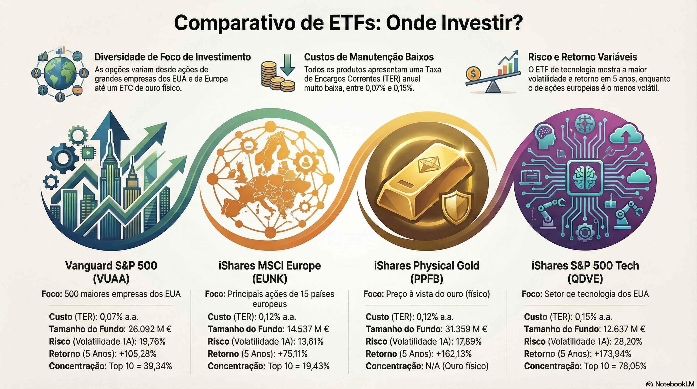

📊 Introdução
Esta análise compara quatro ETFs distintos, representando diferentes abordagens ao investimento: ações americanas, exposição europeia, tecnologia pura e ouro físico. Cada um preenche um papel específico numa carteira de longo prazo.
Os dados e análises apresentadas baseiam-se em informações de mercado até 2025/2026, facilitando a construção de uma estratégia de investimento equilibrada e diversificada.
🖼️ Guia Visual

Visão geral rápida dos quatro ETFs analisados e suas características.
🔍 Comparação Rápida
| ETF | Tipo | TER | Volatilidade | Retorno 5 Anos |
|---|---|---|---|---|
| VUAA | S&P 500 | 0,07% | 19,76% | +105% |
| EUNK | MSCI Europe | Moderada | 13,61% | +22,57% (1 ano) |
| QDVE | S&P 500 Tech | Alta concentração | 28,20% | +174% |
| PPFB | Ouro Físico | 0,12% | Moderada | +162% (5 anos) |
VUAA – O Núcleo "Made in USA"
✅ Pontos Fortes
- Base sólida para uma carteira de longo prazo
- Exposição às 500 maiores empresas americanas
- Volatilidade controlada em 19,76%
- Retorno acumulado de 105% em 5 anos
- TER extremamente baixo: 0,07%
⚠️ Considerações
- Retornos mais modestos a 1 ano comparado com Europa e ouro
- Concentração no mercado norte-americano
- Exposição cambial ao USD
📈 Perfil de Risco/Retorno
Equilíbrio conservador. Ideal como núcleo de uma carteira de ações.
EUNK – Europa como Diversificador
✅ Pontos Fortes
- Distribuição de risco por 15 países europeus
- Menor concentração no Top 10 (cerca de 19,4%)
- Volatilidade mais baixa: 13,61%
- Retorno no último ano: 22,57% (superior ao S&P 500)
- Relação risco/retorno equilibrada
⚠️ Considerações
- Maior exposição a setores sensíveis a ciclos económicos
- Risco político e económico regional
- Performance histórica mais modesta que EUA a longo prazo
📈 Perfil de Risco/Retorno
Bom balanço entre risco moderate e retorno robusto em períodos recentes.
QDVE – O Acelerador Tecnológico
✅ Pontos Fortes
- Retorno acumulado a 5 anos próximo de 174%
- Exposição ao setor de maior crescimento
- Performance excelente em ciclos de inovação
- Liquidez elevada
⚠️ Considerações
- Volatilidade anual de 28,20% (a mais alta do grupo)
- Drawdown máximo próximo de -30% em 12 meses
- Concentração extrema em apenas 3 nomes
- Retorno recente não compensa totalmente a volatilidade
📈 Perfil de Risco/Retorno
Alto risco, alto potencial de retorno. Apenas para investidores que aceitam forte volatilidade.
PPFB – Ouro que se comporta como "Growth"
✅ Pontos Fortes
- Maior volume sob gestão (cerca de 31 mil milhões de euros)
- TER baixo: 0,12%
- Retorno nos últimos 12 meses: 52,65% (impressionante)
- Retorno a 5 anos: +162%
- Funciona como proteção contra choques monetários
⚠️ Considerações
- Ouro não gera fluxos de caixa ou dividendos
- Retorno depende de apreciação do preço
- Volatilidade cambial para investidores europeus
📈 Perfil de Risco/Retorno
Elevado retorno recente com nível de risco moderate. Grande vencedor de curto prazo.
⚠️ Atenção à Sobreposição Escondida
Um erro comum é acreditar que adicionar um ETF de tecnologia a uma carteira que já inclui o S&P 500 aumenta automaticamente a diversificação.
VUAA e QDVE partilham nomes como:
- NVIDIA
- Apple
- Microsoft
- Broadcom
Isto significa que, em vez de diversificar, o investidor está a reforçar o risco precisamente nas mesmas empresas. Se o portefólio já tem um peso relevante em VUAA, acrescentar QDVE deve ser uma decisão consciente de aumentar a aposta em tecnologia — não uma tentativa de "espalhar o risco".
📊 Risco vs Retorno
Quando colocamos risco e retorno no mesmo gráfico, Europa e ouro destacam-se pela relação mais equilibrada no último ano.
- EUNK combina retorno robusto com volatilidade moderada
- PPFB surge como "outlier": muito mais retorno, com risco que não dispara na mesma proporção
- QDVE ilustra o preço da performance máxima: volatilidade 28,20% e quedas até -30%
- VUAA mantém o papel de "core" americano com resultados modestos a 1 ano
💡 Como Encaixar Cada ETF na Sua Estratégia
Pensando numa carteira para um investidor particular em Portugal:
VUAA – Base Global
Como núcleo de ações dos EUA, aproveitando custos mínimos e liquidez elevada. Ideal para investmentos de longo prazo acima de 10 anos.
EUNK – Pilar de Diversificação
Como complemento regional, com maior exposição a setores defensivos como financeiro e saúde. Oferece correlação diferente ao S&P 500.
QDVE – Componente Tática
Para quem aceita forte volatilidade em troca de potencial de crescimento extra em setores de inovação.
PPFB – Hedge Ativo
Para proteção contra choques monetários e, em certos cenários, funcionando como motor principal de retorno.
📄 Documentação Complementar
Para uma análise mais detalhada das estratégias de ETFs e comparação técnica aprofundada:
💡 Conclusão
Mais do que escolher "o melhor ETF", o desafio está em combinar estes blocos de forma coerente com:
- O seu horizonte temporal
- A sua tolerância ao risco
- Os seus objetivos financeiros
A mensagem dos dados é clara:
- A tecnologia continua imbatível no muito longo prazo
- A Europa oferece retorno interessante com menor volatilidade
- O ouro lembra que a diversificação continua a ser a melhor amiga do investidor paciente
👉 Em 2025/26, a chave é diversificar com inteligência, não apenas por intuição.